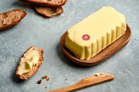
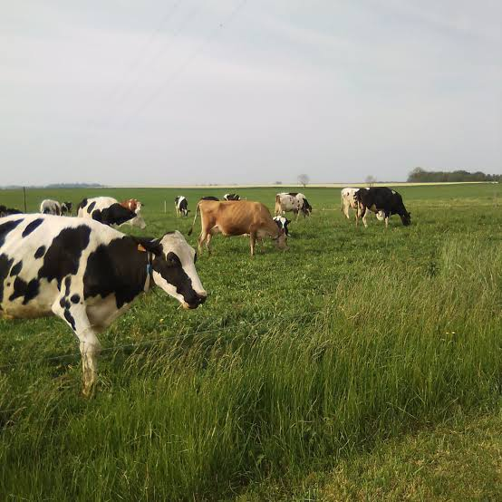

Beurre
Charentes-
Poitou AOP


⟹ Fromages & Terroirs ⟸
Le beurre Charentes-Poitou AOP est considéré par les gastronomes et les chefs comme le meilleur beurre de France. Produit dans les plaines verdoyantes du Poitou-Charentes et de la Vendée, il bénéficie d'une tradition laitière exceptionnelle façonnée par des siècles de savoir-faire paysan et un terroir naturellement favorable à l'élevage bovin.

Les prairies calcaires du bassin charentais, baignées par un climat doux et ensoleillé, offrent aux vaches des herbages d'une richesse exceptionnelle. Les races Prim'Holstein et Montbéliarde, élevées en plein air, produisent un lait naturellement riche en matières grasses, base indispensable d'un grand beurre.
« Le beurre des Charentes est le plus fin de France — sa texture est incomparable et son arôme, unique au monde. »
— Auguste Escoffier, Ma Cuisine, 1934La spécificité absolue de ce beurre réside dans la technique de maturation lente de la crème : avant d'être barattée, la crème est ensemencée avec des ferments lactiques sélectionnés et laissée à maturer pendant 12 à 18 heures. Ce processus développe les arômes caractéristiques de noisette, de crème fraîche et de sous-bois qui font la réputation mondiale du beurre charentais.
L'Appellation d'Origine Protégée, obtenue en 1979, impose une aire géographique strictement délimitée couvrant les départements de la Charente, de la Charente-Maritime, des Deux-Sèvres, de la Vienne et d'une partie de la Vendée et de la Loire-Atlantique. Seuls les beurres fabriqués dans cette zone, avec du lait produit localement et selon le procédé de maturation traditionnel, peuvent revendiquer l'AOP.

Aujourd'hui, le beurre Charentes-Poitou AOP est le beurre de référence des plus grandes cuisines du monde. De Paris à Tokyo, les chefs étoilés l'utilisent comme matière première irremplaçable pour leurs sauces, leurs viennoiseries et leurs pâtisseries.
Le beurre Charentes-Poitou AOP s'utilise aussi bien cru que cuit, et se révèle indispensable dans de nombreuses préparations culinaires où sa qualité fait toute la différence.
Le beurre blanc nantais : sauce emblématique de la cuisine ligérienne, elle est réalisée en montant le beurre charentais dans une réduction de vin blanc et d'échalotes. Sa texture nacrée et son goût subtil sont directement liés à la qualité du beurre utilisé.
Les viennoiseries et croissants : les boulangers et pâtissiers professionnels utilisent exclusivement ce beurre pour le feuilletage. Sa faible teneur en eau et sa plasticité naturelle permettent d'obtenir des feuilletés aériens aux alvéoles régulières.
Les sauces beurre blanc et bordelaise : le montage au beurre froid, technique fondamentale de la cuisine française classique, donne des résultats incomparables avec le beurre AOP dont la structure émulsifie parfaitement.
Sur une tartine, simplement : les connaisseurs s'accordent à dire que le meilleur usage reste le plus simple — une tranche de pain de campagne légèrement grillée, beurrée généreusement, avec une pincée de fleur de sel.
Beurre doux Charentes-Poitou AOP : la version classique, sans sel ajouté, qui exprime pleinement les arômes naturels de la crème maturée. Idéal en pâtisserie et pour les sauces.
Beurre demi-sel Charentes-Poitou AOP : additionné de 0,5 à 3 % de sel, il est apprécié à table sur pain ou pour cuisiner des plats qui bénéficient d'une légère note salée.
Beurre de baratte artisanal : produit par de petites laiteries ou directement à la ferme, il présente une texture plus rustique et des arômes encore plus prononcés. Certains producteurs travaillent encore avec des barattes en bois traditionnelles.
Beurre clarifié (ghee charentais) : fondu et décanté pour retirer l'eau et les protéines, il permet de cuire à haute température sans brûler et se conserve plusieurs mois. Très apprécié des chefs pour la cuisson des viandes.
Le beurre Charentes-Poitou AOP est disponible dans de nombreux circuits, mais sa qualité varie selon les producteurs et les stades d'affinage.
Surgères (Charente-Maritime) — Capitale du beurre charentais, avec la coopérative Surgères (marque Elle & Vire) dont les installations sont ouvertes aux visites sur rendez-vous.
Échiré (Deux-Sèvres) — La laiterie d'Échiré produit le beurre de baratte le plus réputé de France, vendu en pot de grès ou en motte. Disponible sur place et dans les épiceries fines parisiennes.
Marchés de Niort et de Poitiers — Les producteurs fermiers des Deux-Sèvres y vendent directement leurs beurres de baratte, souvent non pasteurisés, d'une fraîcheur incomparable.
Épiceries fines et fromageries — Les bonnes maisons proposent les grandes marques AOP : Échiré, Pamplie, Sèvre & Belle, ou Le Gall.
Coopérative Pamplie (Deux-Sèvres) — Coopérative regroupant des producteurs locaux, avec boutique sur place et vente en ligne de l'ensemble de la gamme.